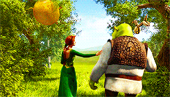

| # | Значение | Gif |
|---|---|---|
| Город | Львов |  |
| Место | Кинотеатр Multiplex | |
| Дата | 31.01.2022 | |
| Время | 11:00 | |
| Стоимость | 60 | |
| Возраст | 0+ | |
| Количество билетов | 170 | |
| # | Значение | Gif |
Шрек — огромный зелёный огр (великан-людоед из западноевропейских сказок), который живёт в одиночестве на болоте в окрестностях города-государства Дюлок, населённого людьми, животными, куклами и др. из разных европейских сказок и легенд (напр. Красная Шапочка, Пиноккио, три слепые мышки из английского детского фольклорного стихотворения). Людей он, по доброте душевной и вопреки бытующим убеждениям, практически не ест, но его самолюбие греет тот факт, что при виде него все в страхе бросаются врассыпную. Однако, когда злобный коротышка-лорд Фаркуад — правитель Дюлока — изгоняет из своих земель всех героев разных сказок на болото Шрека, последний отправляется выяснять с Фаркуадом вопрос об освобождении от них болота. Самому ему депортация нисколько не грозит, ведь он легко одолевает всех крестьян, пытающихся связать его. Вместе с ним увязывается болтливый, вечно надоедающий Шреку говорящий Осёл, которого Шрек незадолго до этого спас от солдат правителя.
Сам лорд Фаркуад хочет стать законным королём, но для этого ему, по сказочному канону, надо жениться на принцессе. Волшебное Зеркало из сказки про Белоснежку под угрозой показывает ему на выбор трёх (первые две из них — Белоснежка и Золушка), и он в итоге отдаёт предпочтение, по совету придворных, третьей — принцессе Фионе, которая заточена в башне замка, охраняемого огнедышащим драконом. Зеркало, однако, пытается предупредить лорда о каком-то проклятии Фионы, но Фаркуад не дослушивает до конца. Он устраивает рыцарский турнир, победитель которого получит почётное право одолеть дракона и вызволить принцессу, так как сам правитель не хочет подвергаться опасности, да и не смог бы победить никого физически. Шрек и Осёл приходят как раз к началу турнира. Заметив их, лорд провозглашает, что тот, кто из рыцарей убьёт великана, получит почётное право спасти принцессу. Однако друзья легко всех побеждают. Фаркуад неожиданно меняет план и объявляет победителем турнира Шрека. Под угрозой жизни Шрек соглашается спасти принцессу, если взамен Фаркуад прикажет сказочным существам уйти с его болота. Договор заключён.
Шрек и Осёл отправляются к замку. Шрек надевает старый шлем и наплечники, что остались от погибших рыцарей, ранее убитых драконом, а Осла отправляет поискать лестницу. Далее они лицом к лицу встречаются с драконом. Тот взмахом хвоста забрасывает Шрека в башню Фионы и остаётся с глазу на глаз с Ослом. Оказывается, что это дракониха, и она внезапно влюбляется в Осла, после того, как он говорит ей комплименты, чтобы спасти свою жизнь; пытается с ним заигрывать. В это время Шрек выводит Фиону из башни, и им втроём с Ослом удаётся убежать, заодно посадив Дракониху на цепь, чтобы та не смогла их догнать. Фиона думает, что её освободил прекрасный принц (как положено по сюжету её сказки, знакомой ей, как и всем, с детства), однако всё пошло не совсем так, как должно. Она не желает добровольно идти к Фаркуаду, и Шреку приходится тащить её силой. Фиона каждый раз перед закатом прячется от Шрека и Осла. Осёл случайно обнаруживает, что она по ночам превращается в зелёную великаншу того же «биологического вида», что и Шрек. Шрек слышит часть их разговора о том, «можно ли полюбить столь ужасного монстра», но думает, что они говорят о нём. Он обижается и уходит, а утром сдаёт Фиону лорду Фаркуаду и ссорится с Ослом.
Трагедия Шрека и Фионы состоит в том, что оба кажутся теми, и пытаются быть теми, кем они не являются. Люди давно повесили на них ярлыки: на Шрека — то, что он огромный тупой людоед, на Фиону — то, что принцессе следует быть тихой и покорной. И Шрек, и Фиона настолько свыклись с этими ненастоящими образами, что застряли в них, сами того не ведая. Поверив однажды в себя других, они лучше понимают друг друга, но на миг потеряв себя, они расстаются, как им кажется, уже навсегда. Им снова придётся жить под ярлыками смирной принцессы и злобного огра. И лишь их огромное желание снова не потерять себя и свою любовь, отбрасывание этих самых ярлыков и непонимания приводит их к счастью и любви. Фиона готовится к свадьбе и вспоминает Шрека.
Осёл решается рассказать Шреку всю правду. Узнав, что Фиона действительно любит его, Шрек верхом на Драконихе, которая, любя Осла, соглашается помогать и Шреку, летит в замок. Они прибывают как раз вовремя, в самый разгар свадебной церемонии, когда брак ещё не был заключён, и срывают её. В это время садится солнце, и Фиона на глазах у всех превращается в огра. Лорд Фаркуад приказывает страже заточить свою «невесту-чудовище» в башню, а Шрека казнить. Шрек отбивает её с помощью Драконихи, которая врывается в замок и проглатывает Фаркуада живьём.
Заклятие Фионы можно снять поцелуем, поэтому Шрек целует её, и все ожидают, что теперь она превратится в красавицу. Однако Фиона остаётся огром (потому что её поцеловал огр), и они со Шреком играют весёлую свадьбу на болоте в присутствии сказочных героев и под песню «I’m a Believer», после чего в карете-луковице отправляются в свадебное путешествие.
В конце мультфильма показана свадьба Фионы и Шрека.